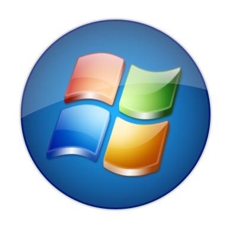
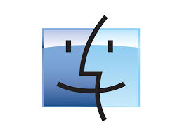
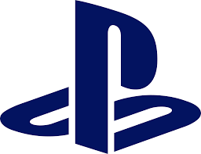
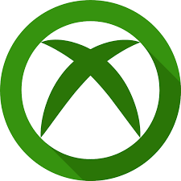
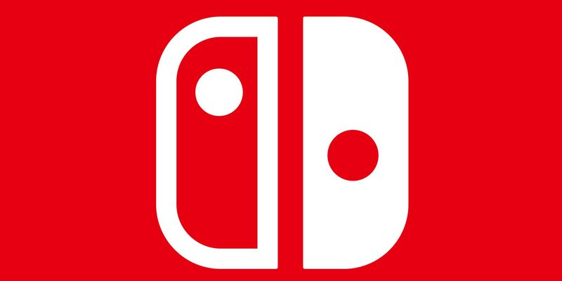
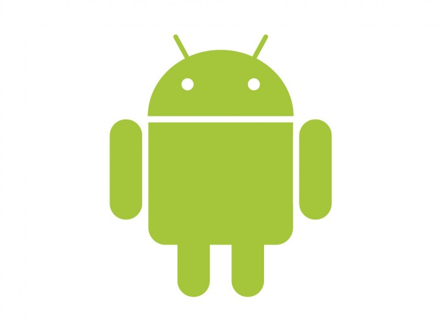

Fortnite es un videojuego del año 2017 desarrollado por la empresa Epic Games, lanzado como diferentes paquetes de software que presentan diferentes modos de juego, pero que comparten el mismo motor general de juego y las mecánicas. Fue anunciado en los Spike Video Game Awards en 2011. Los modos de juego publicados incluyen Fortnite Battle Royale, un juego gratuito donde hasta cien jugadores luchan en una isla, en espacios cada vez más pequeños debido a la tormenta, para ser la última persona en pie, y Fortnite: Salvar el mundo, un juego cooperativo de hasta cuatro jugadores que consiste en luchar contra carcasas, criaturas parecidas a zombis, utilizando objetos y fortificaciones. Ambos modos de juego se lanzaron en 2017 como títulos de acceso anticipado.
| Plataformas Disponibles | ||||||
|---|---|---|---|---|---|---|
| Windows | MacOS | PlayStation 4 | Xbox One | Nintendo Switch | IOS | Android |
|  |  |  |  |  |  | |
Actualmente, Fortnite se divide en tres modos de juego, aunque cada juego utiliza el mismo motor y tiene gráficos, recursos artísticos y mecánicas de juego muy similares.
Es el modo más popular de Fornite por el cual esta en lo mas alto.Sigue el formato estándar del género battle royale: hasta 100 jugadores vuelan desde autobuses flotantes a un mapa coherente, que incluye distribución aleatoria de armas, armadura y otras características de apoyo al combate. El objetivo es ser el último jugador (o equipo, si juega en equipos pequeños) vivo matando o evitando a otros jugadores. Con el tiempo, la zona segura del juego (representando el ojo de una tormenta que está devastando el mundo), disminuye de tamaño, y los jugadores atrapados fuera de la zona recibirán daño, potencialmente muriendo. Si sobrevive mucha gente, el ojo de la tormenta desaparecerá haciendo una muerte subíta. Esto dirige a los jugadores supervivientes a espacios más estrechos, forzando los encuentros de los jugadores. Los jugadores pueden saquear a los enemigos derrotados. Se producirán caídas aleatorias de suministros durante una partida, proporcionando armas y objetos al azar. Este modo el cual sigue una mecánica de juego similar a otros juegos de batallas reales, particularmente de PlayerUnknown's Battlegrounds, además de admitir hasta cien jugadores, ya sean individuos o escuadrones de hasta cuatro personas, que intentan ser la última persona o equipo en pie mientras cazan a otros jugadores y evitan que los maten ellos mismos, se distingue porque todos los jugadores comienzan con nada más que con un pico para recolectar recursos, y se lanzan en paracaídas en el mapa. Una vez que aterrizan, pueden buscar armas, armaduras y recursos, el último de los cuales se puede utilizar para hacer estructuras de la misma manera que en el modo "Salvar al mundo". Con el tiempo, una tormenta rodea el área y hace que el área "segura" del mapa disminuya cada vez más de tamaño. Una vez que el área "segura" se haya reducido al círculo más pequeño en el mapa (un círculo delgado y blanco), generará, en una ubicación aleatoria, un círculo más pequeño dentro de él. Aquellos que son atrapados fuera del área reciben daño y potencialmente mueren si permanecen fuera por demasiado tiempo. También hay caídas al azar de recursos, armas y artículos que pueden requerir que los jugadores construyan pisos y rampas para acceder, con diferentes elementos aleatorios determinados por la rareza. Los jugadores pueden usar dinero real para comprar dinero en el juego, que se puede usar para comprar artículos cosméticos. La principal distinción de "Fortnite Battle Royale" con respecto a otros juegos de batalla de Royale es el sistema de construcción. Casi todos los objetos del entorno se pueden descomponer en materiales (madera, piedra y metal), que luego se pueden utilizar para construir fortificaciones de durabilidad limitada, como paredes, escaleras y rampas. Estos objetos pueden ser usados para ayudar a atravesar el mapa, proteger al jugador de disparos o ralentizar la progresión de otros jugadores. El videojuego es uno de tipo gratuito, apoyado por microtransacciones que permite a los jugadores comprar "V-Bucks" (paVos), la moneda interna del juego. V-Bucks también se comparten con el juego principal "Fortnite" "Save the World", que ofrece a los jugadores la oportunidad de ganar V-Bucks completando misiones o misiones diarias.4 Los V-Bucks pueden ser usados para comprar mejoras para el jugador (héroes, skins de personajes y emotes). Los V-Bucks también se pueden utilizar para comprar Pases de Batalla que aceleran la velocidad a la que un jugador aumenta su nivel dentro de las "temporadas" del juego (cada temporada dura unos meses). Al elevar su nivel, obtienen recompensas automáticas de artículos cosméticos típicamente alrededor de un tema. Los jugadores pueden aumentar los niveles sin un pase de batalla, aunque a un ritmo más lento.